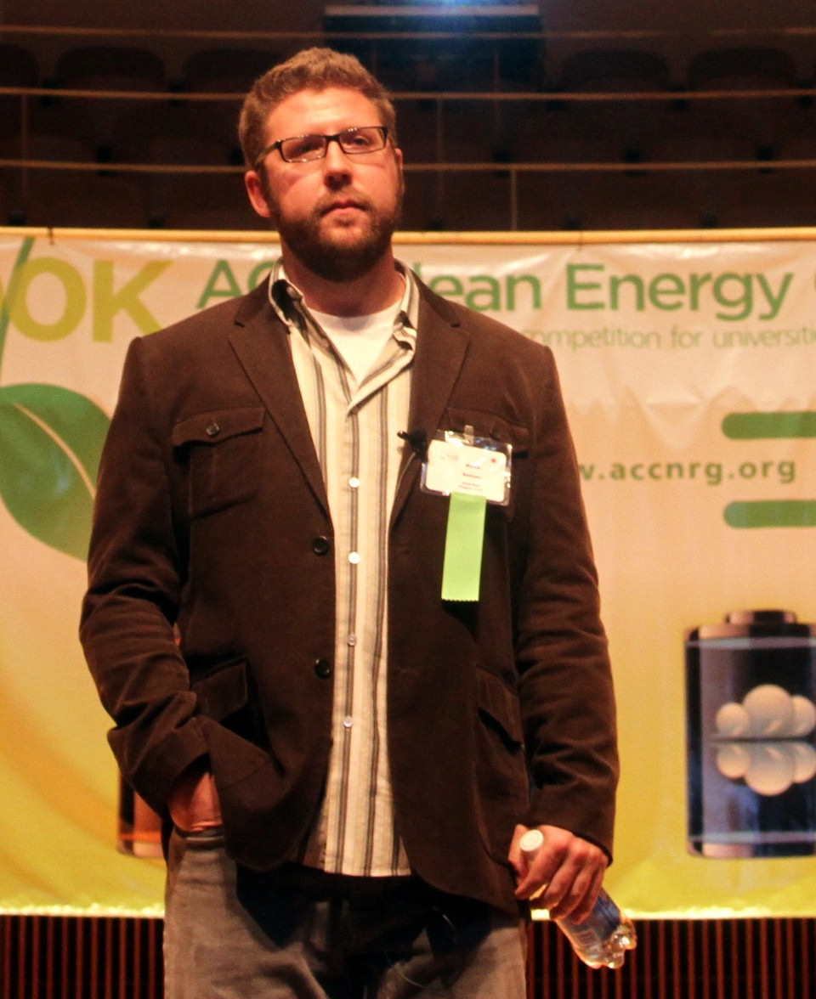
Blake Sawyer
PhD in Human-Computer Interaction, Virginia Tech, 2016. I joined Sayspring in August 2017; Adobe acquired us in May 2018. I worked on Adobe XD from 2018 to 2020, then helped incubate a new project that became Adobe Podcast, launching as a founding engineer in December 2022.
In September 2025 I stepped away for a sabbatical — I'm currently sailing my Gulfstar 44 through the Caribbean, with hopes of crossing oceans soon. Follow along on the sailing log.
Research
My research lies between two worlds: the physical world and the digital world — design, artistic expression, engineering and computer science. It began in human factors and ergonomics, expanded into human-computer interaction, and keeps expanding as displays, sensors, and connected devices spread into every hand, home, and workplace.
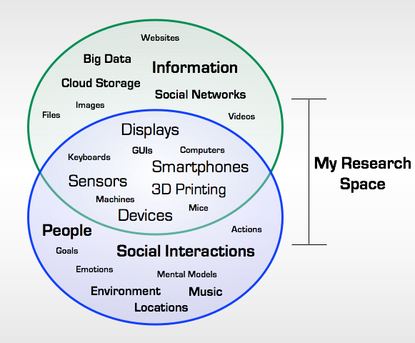
Social Orbits: overlapping our social and information activities
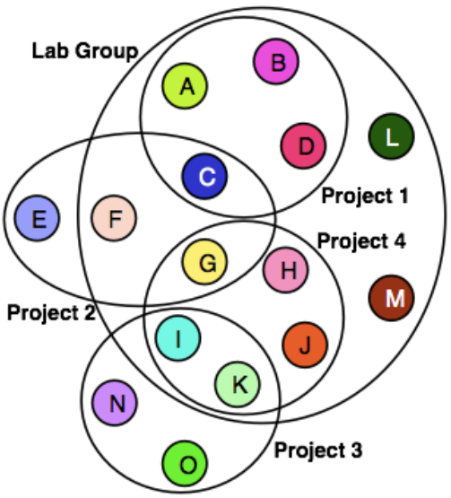
People organize information on their devices largely unchanged since the personal computer arrived — files, email, calendars, scattered across apps and machines with no shared thread. This work argues that the missing thread is social: the people and groups we interact with, face-to-face and online. Tag information by who was in the room, or who sent it, and re-finding it later means re-finding the social context, not hunting folders.
Musical Instruments MAKEr Camp
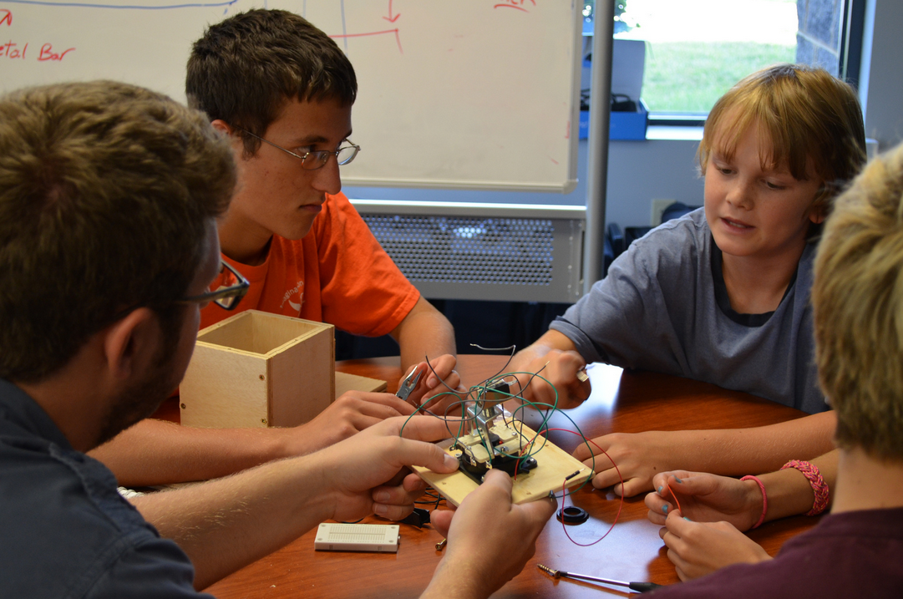
ICAT's summer camp brought thirty middle- and high-schoolers in to build electronic instruments from Arduinos, cardboard, sensors, and wood — programmed with PD-L2Ork. Custom drums, wind and string instruments, even a room you could play like an instrument.
Connected Vehicle Derby
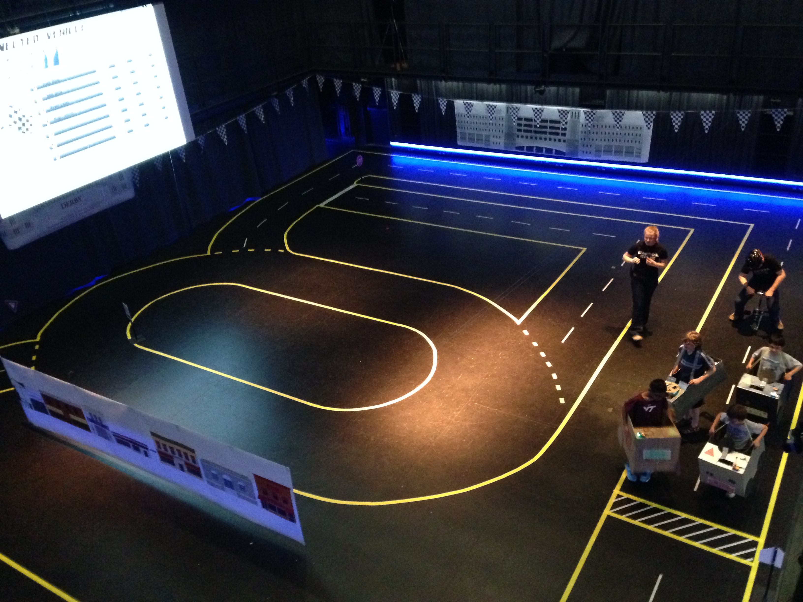
Kids brought their own cardboard cars; we gave them connected-vehicle technology. Heats of seven raced under different modes while collisions, speed, and lap times were sensed and shown live, inside the cars and on a scoreboard. A VTTI × ICAT collaboration.
Distracted Driver
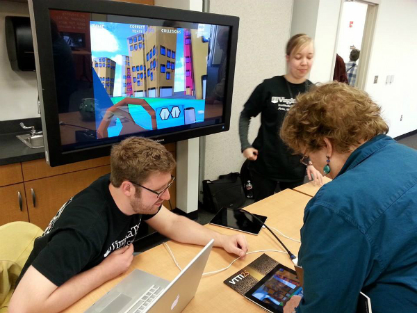
A driving-simulation game that has early drivers complete text-message puzzles while steering through congested traffic — teaching the danger of texting behind the wheel by letting you feel it happen. VTTI × ICAT, Fall 2013 through Spring 2014.
RaPLab: Rapid Prototyping Lab for CHCI@VT
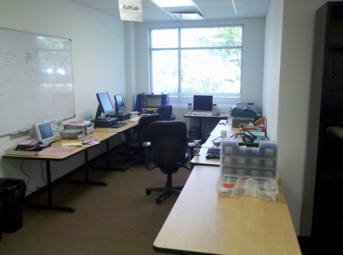
Founded on an NSF "Display and Device Ecologies" grant: the premise that interacting with computing shouldn't stop at the glass wall of screen and keyboard. Mobile devices and ambient displays working together, so information objects feel as real as physical ones — which needs a shared, expected way for displays and devices to interoperate.
The Life Spaces Project
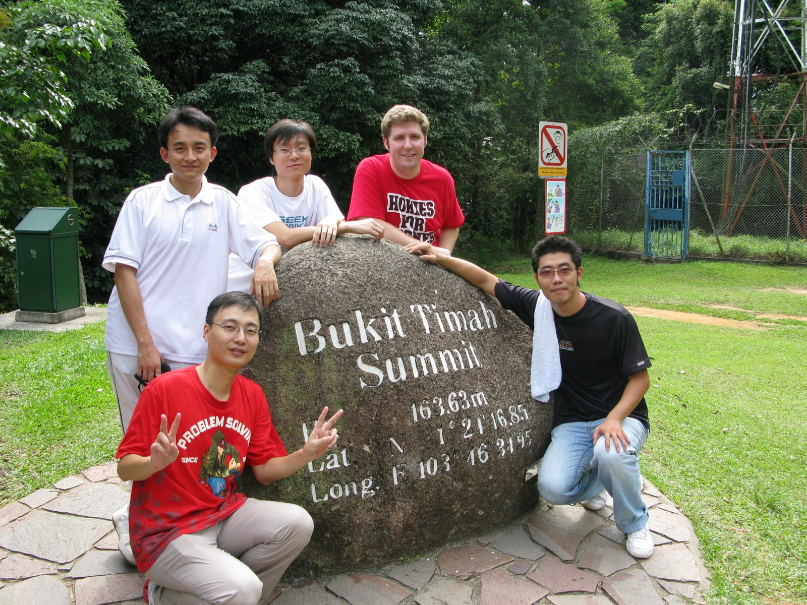
A collaborative NRF grant between Virginia Tech and the National University of Singapore. A summer at NUS's Ambient Intelligence Lab building an interactive physical-digital environment — places and spaces that come alive to inform people and create new ways of interacting. The seed for what became the Social Orbits dissertation.
Distractions
"Live like you'll die tomorrow, but learn like you'll live forever." A favorite Latin teacher passed that along; I later learned it was Gandhi's. Friends, music, electronics, golf, disc golf, cooking — I try to learn something new most days, and try not to take any of it too seriously.
ForecastShelf
A breathing, back-lit bookshelf — 3'×4', wall-mounted, WiFi enabled — that reacts to the current weather and forecast. Arduino and XBee controlled, with six color schemes for six conditions: the top half shows now, the bottom half shows the next three days, and a sun drifts across the top and "breathes" with the wind.
GreenStar
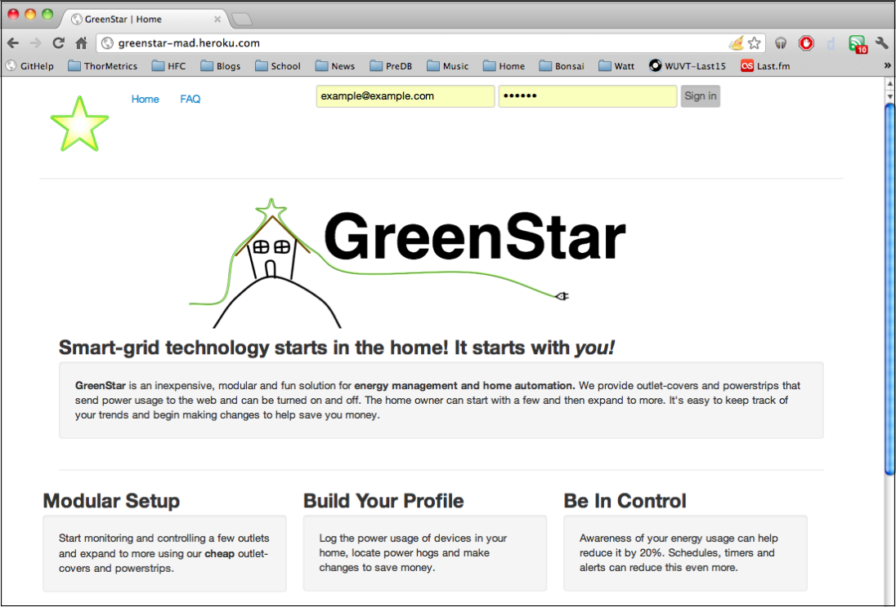
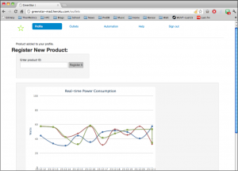
A business plan and system for understanding home energy use through simple, internet -enabled smart outlets — track usage, flip outlets remotely, schedule them. We explored installing them in Virginia Tech dorms before shelving the project to focus on school.
AutoCoop
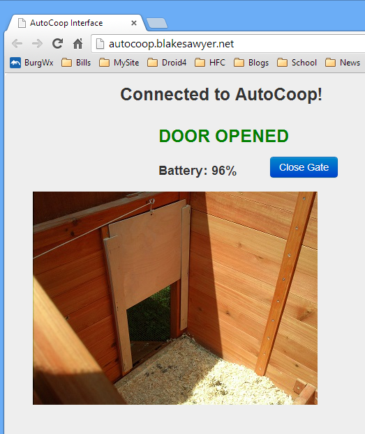
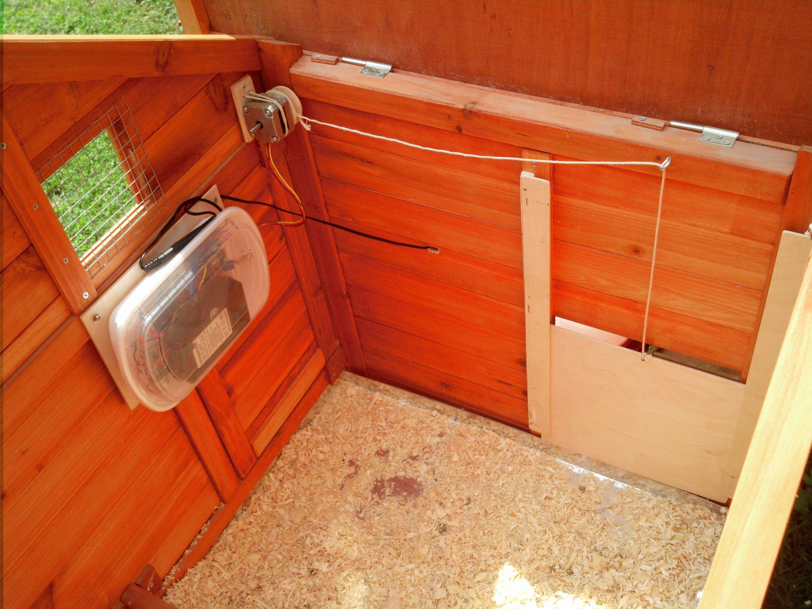
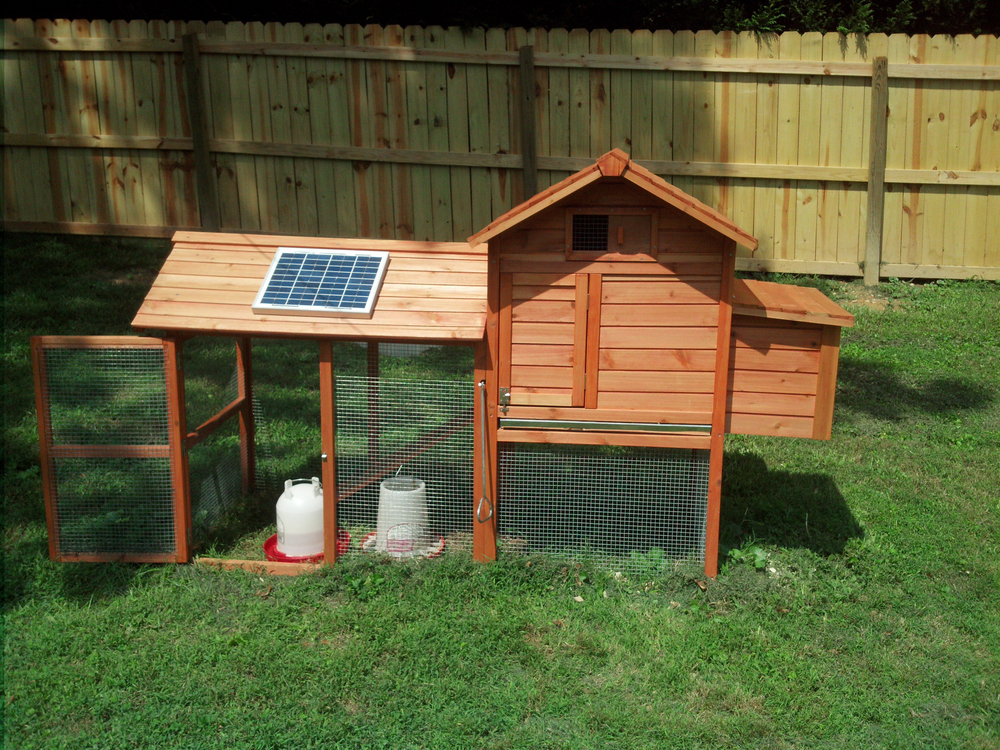
Five chickens back in Virginia meant delicious eggs and an early-morning walk to let them out. So: an automatic coop door, opened and closed from a phone. Arduino-controlled, XBee wireless, solar powered, real-time status, web interface. (No spy camera — decided against it.)
The Splash App
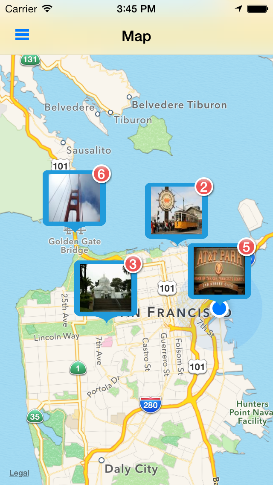
See and share moments happening around you, right now. Splash let people post, view, and vote on nearby photos — popular ones grew bigger and lasted longer on the map — and build their own feeds around the places that mattered to them. No longer maintained.
Hokie Flying Club
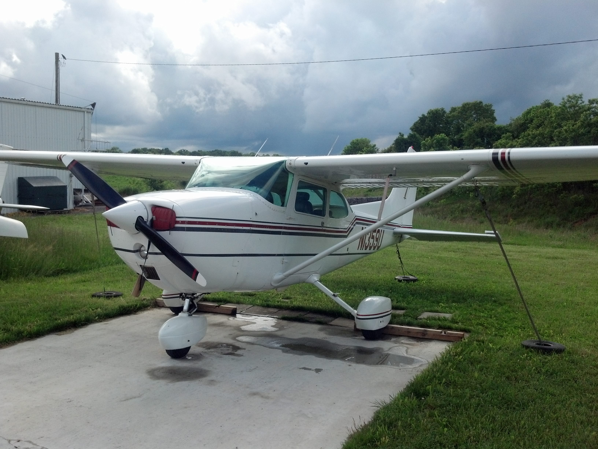
An active member since late 2009, working toward a Private Pilot's license soon after. Served as Secretary in 2012, and — after a few hiatuses — earned the PPL in July 2014.